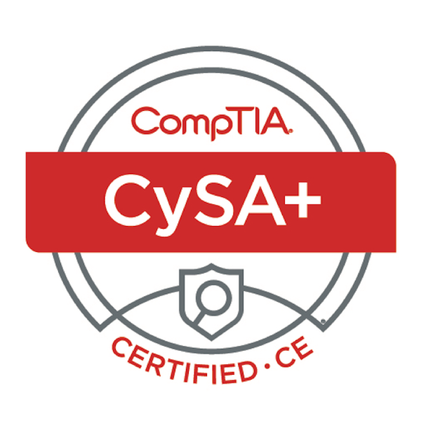
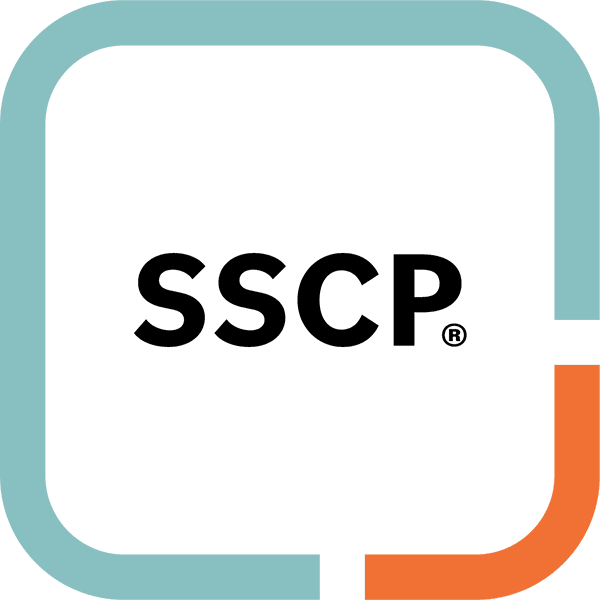
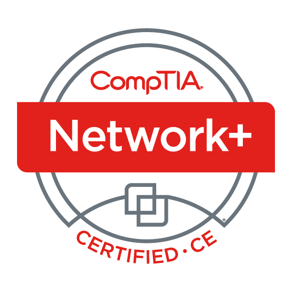
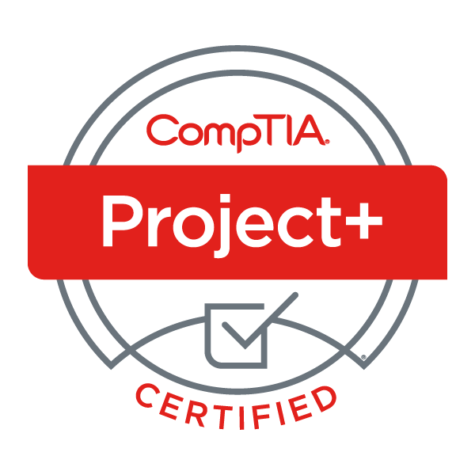
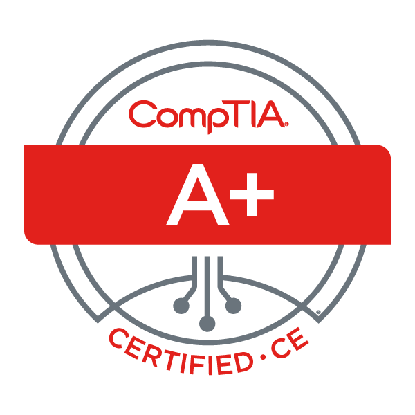
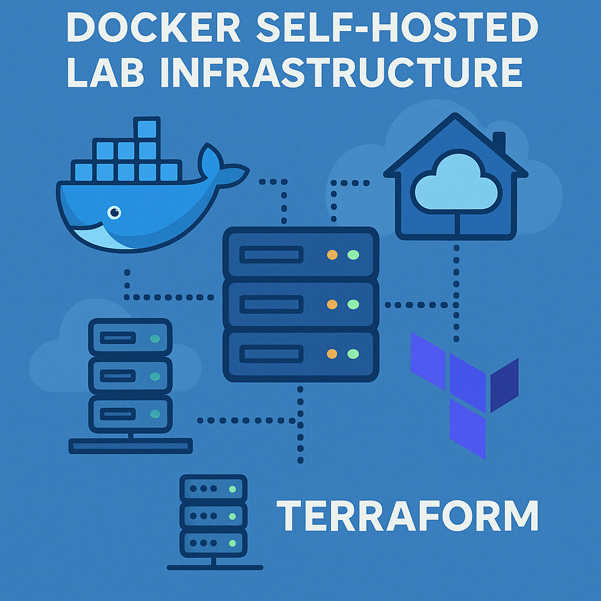
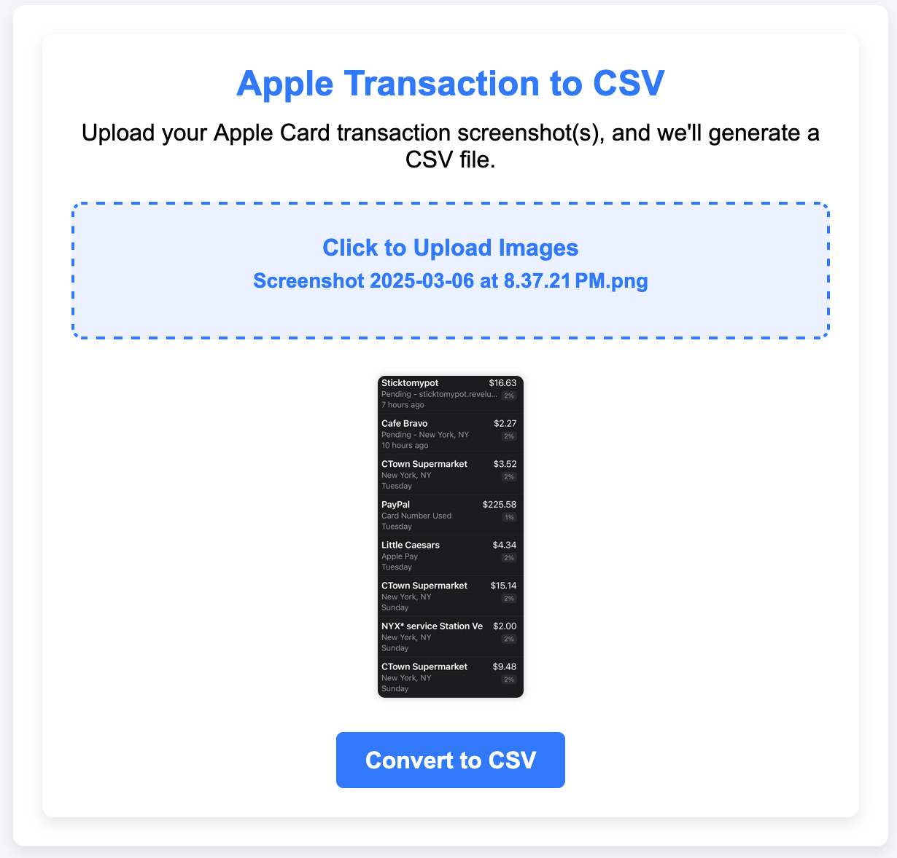

Bridging enterprise systems engineering, cloud infrastructure automation, and cybersecurity defense. Managing 400+ endpoints across global fleets, orchestrating containerized microservices, and securing modern hybrid cloud environments.
Rooted in proactive cybersecurity defense and scaled through DevOps automation and cloud operations.
I am a Senior Tech Ops Specialist with a Bachelor's Degree in Cybersecurity & Information Assurance, dedicated to building resilient, automated, and secure systems.
In my day-to-day operations, I manage a global fleet of 400+ macOS and Windows endpoints with Jamf Pro and Microsoft Intune, lead vulnerability triage via HackerOne, and craft automation tooling using Python, Google AppScript, and Docker containers.
Beyond enterprise administration, I self-host multi-node infrastructure, write Ansible and Terraform configurations, and continuously pursue advanced cloud engineering—combining practical DevOps workflows with zero-trust security principles.
B.S. Cyber Security & Info Assurance — WGU (2024)
A.S. Cyber Security — Suffolk Community College (2019)
Associate Cloud Engineer (GCCA)
Google Cloud Platform
CompTIA Security+, PenTest+, CySA+, & ISC2 SSCP / CCSP
A 24/7 dedicated enterprise homelab environment designed for staging, continuous testing of Infrastructure-as-Code (IaC), and self-hosting resilient microservices.
Running self-hosted mission-critical services including Portainer for container orchestration, NGINX Proxy Manager for SSL certificates, Nextcloud for private cloud storage, MariaDB databases, and Home Assistant.
Architected with a UniFi Cloud Gateway Ultra. Strict VLAN separation between Trusted devices, IoT endpoints, and DMZ/Lab services. Remote access secured via Twingate Software-Defined Perimeter and Cloudflare Zero Trust tunnels without exposing public ports.
Homelab configuration managed via version-controlled Ansible playbooks with encrypted Ansible Vault for credentials. Hardware inventory, component tracking, and lifecycles tracked via an automated self-hosted Snipe-IT ITAM instance.
Distributed multi-agent operational network: Max operates autonomously within an isolated Proxmox VE LXC container, equipped with direct API telemetry to the hypervisor, UniFi gateway, Snipe-IT ITAM, and Docker stacks. Mini serves as an Apple Silicon M1 edge dispatcher bridging communication channels and event triggers. Powered by local GPU inference (RTX 3080 / Ollama) and tool-calling agent pipelines under human-in-the-loop security boundaries.
Engineered plug-and-play personal cloud and home server appliances deployed on compact Dell OptiPlex Micro Form Factor (MFF) hardware. Each system is pre-configured with Proxmox VE, hardened firewall rules, and containerized stacks to give privacy-conscious users instantaneous access to self-hosted personal clouds without setup complexity.
Documented impact spanning fleet administration, security triage, internal tooling, and client infrastructure support.
Accredited credentials across Cloud Architecture, Penetration Testing, Systems Security, and Enterprise Operations.





Hands-on cloud implementations, open-source automation utilities, and self-hosted systems.

A sanitized public demo and reference repository showcasing my Ansible and Docker Compose infrastructure-as-code patterns. Automates operating system security hardening, Docker Engine setup, and container orchestration across Traefik v3, Authentik IAM, Immich photo cloud, Snipe-IT ITAM, Actual Budget, and Grafana monitoring.

Full-stack Python & Flask application designed to parse Apple Card monthly transaction screenshots into standardized, clean CSV files via optical character recognition (Tesseract OCR). Includes real-time client-side tabular editing, parsing validation, and export capabilities. Containerized with Docker and publicly deployed.
Looking for a Senior Tech Ops Specialist, SecOps practitioner, or Cloud Infrastructure collaborator? Let's connect.
Available for Senior Tech Ops, Cloud/DevOps engineering roles, infrastructure consulting, and homelab discussions.
echo "Let's build secure & resilient systems together."